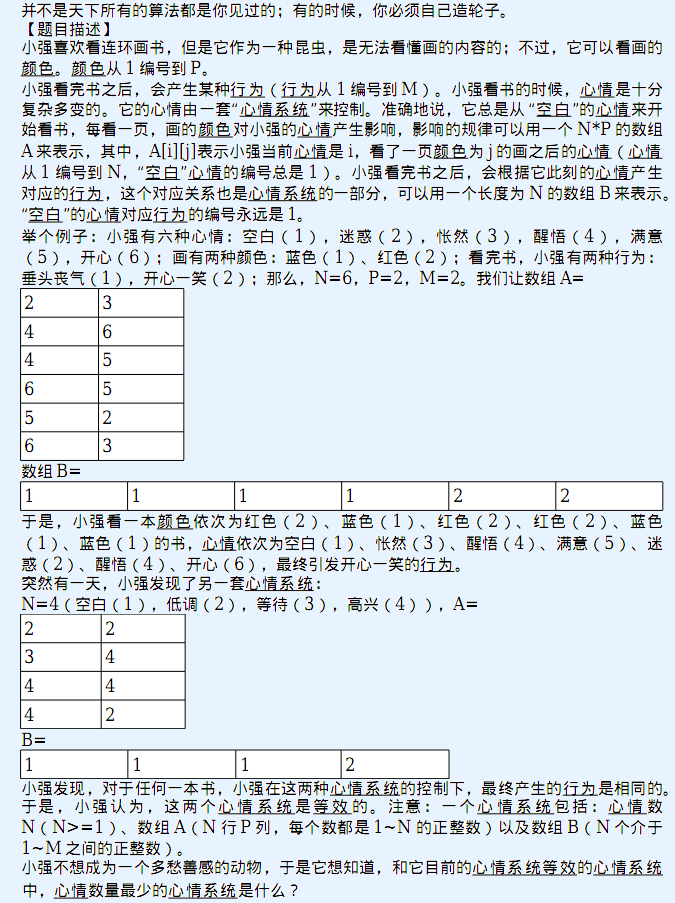

第一行两个整数P，M，表示书的颜色数、小强的行为数。接下来描述
了一个心情系统。第一行是心情数N，接下来N行每行P个正整数表示数组A，接下来一
行N个正整数表示数组B。P>=1，M>=1，N>=1。注意：某些心情或者某些行为可能
是小强永远也不会达到或者做出的。

2 2
6
2 3
4 6
4 5
6 5
5 2
6 3
1 1 1 1 2 2
4
2 2
3 4
4 4
4 2
1 1 1 2对于100%的数据，N<=1000，P<=26，M<=1000